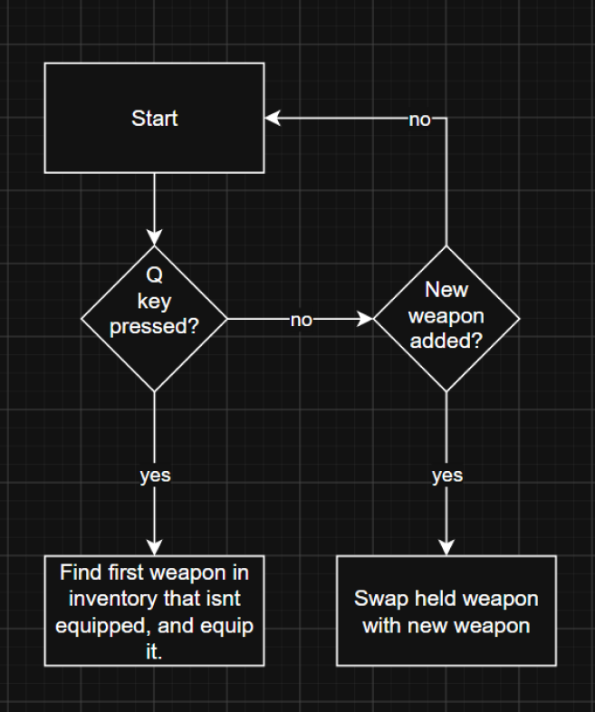
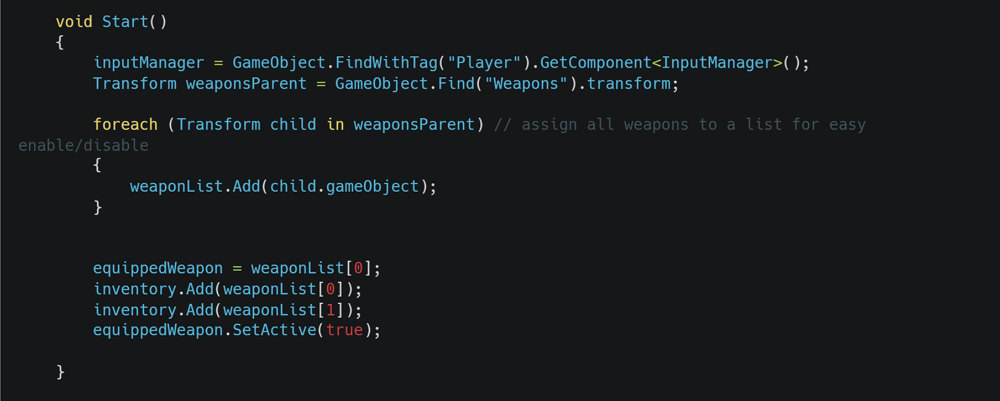
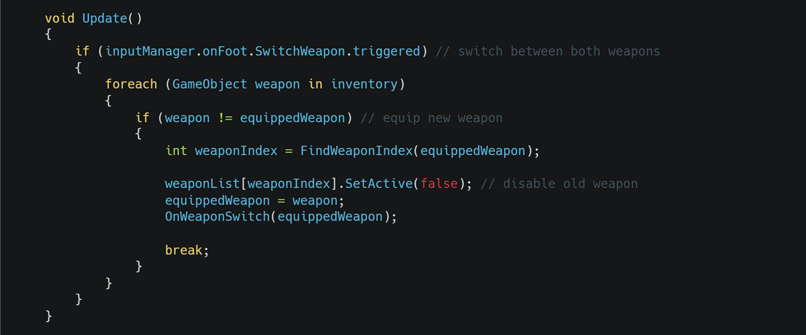
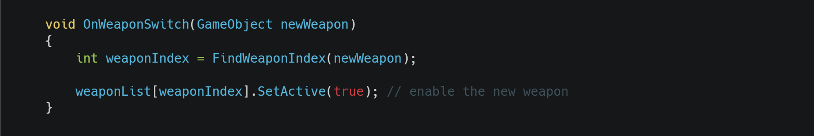
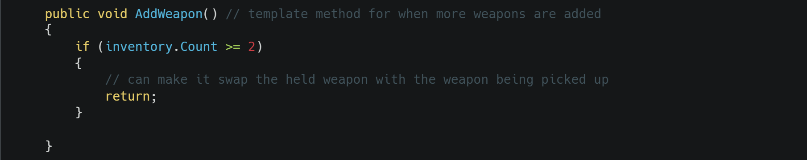
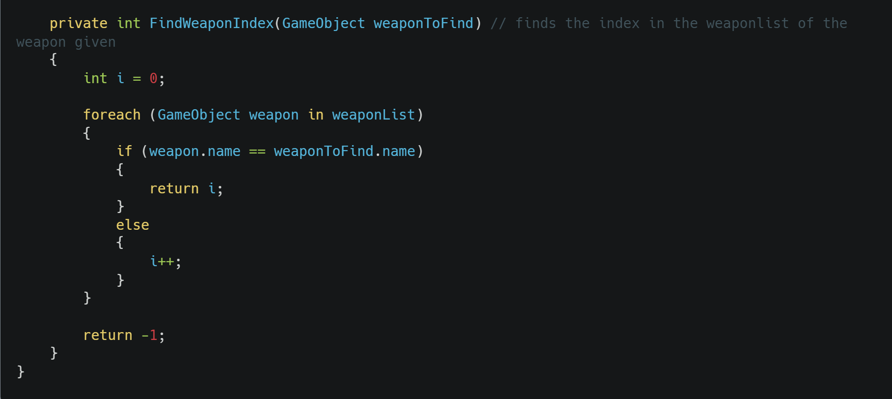

Functional requirement
“There should be an inventory system that stores your ammo, and collected weapons. You should be able to only hold 2 weapons at a time, and easily switch between them both by pressing Q. If a weapon is picked up, swap the held weapon with the one being picked up”
Testable criteria:
Weapons switch by pressing Q
Ammo is correctly tracked in the inventory.
Weapons being picked up swap with held weapon


inventory list of gameobjects to store held weapons, and a weapon list containing all available weapons

Assigns all available weapons to a list to easily enable/disable the gameobject

Waits for SwitchWeapon bind (defined in the Unity input system as Q) and will search the inventory for another weapon that isn’t equipped and equips it

Called whenever a new weapon is switched to. Enables the gameobject of the new weapon

Method that will be called when a new weapon is added to the inventory. Will be used for switching held weapon, however there is only 2 weapons in the game right now so it is unfinished.

This method finds the index number of a weapon within the weaponList List by looping through the list and returning the index number when the name matches.